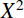

The MathML <msup> element is used to attach a superscript to an expression.
It uses the following syntax: <msup> base superscript </msup>.
class, id, styledisplaystylefalse, a more compact layout is used to display formulas. The main effect is that larger versions of operators are displayed, when displaystyle is set to true. See also movablelimits on {{ MathMLElement("mo") }}.hrefmathbackground#rgb, #rrggbb and HTML color names.mathcolor#rgb, #rrggbb and HTML color names.superscriptshift {{deprecated_inline}}Sample rendering: 
Rendering in your browser:
<math> <msup> <mi>X</mi> <mn>2</mn> </msup> </math>
| Specification | Status | Comment |
|---|---|---|
| {{SpecName("MathMLCore", "#subscripts-and-superscripts-msub-msup-msubsup", "msup")}} | {{Spec2("MathMLCore")}} | Draft specification |
| {{ SpecName('MathML3', 'chapter3.html#presm.msup', 'msup') }} | {{ Spec2('MathML3') }} | Current specification |
| {{ SpecName('MathML2', 'chapter3.html#presm.msup', 'msup') }} | {{ Spec2('MathML2') }} | Initial specification |
{{Compat("mathml.elements.msup")}}